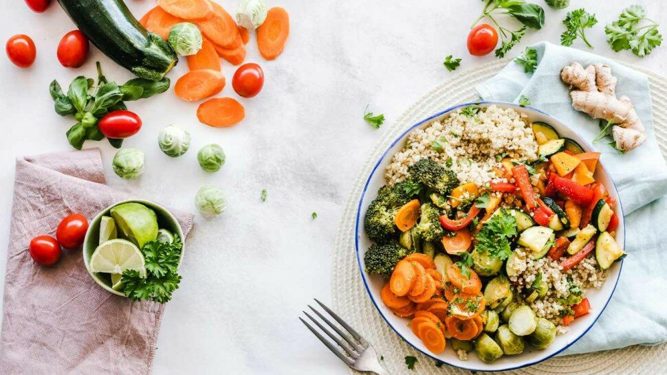

Le régime méditerranéen (ou crétois) : que faut-il savoir ?

Le régime méditerranéen (nommé aussi « régime crétois ») est un régime alimentaire et un mode de vie réputé comme étant sain et équilibré auprès des professionnels de la santé, notamment les diététiciens-nutritionnistes. Ce régime ancestrale, qui est principalement constitué à base de plantes, intègre les saveurs traditionnelles de la Méditerranée et les méthodes de préparation et de cuisson classiques, simples à reproduire.
Riche en ingrédients savoureux comme les fruits, les légumes, les grains entiers et les graisses saines pour le cœur, la diète méditerranéenne est à la fois gourmande et très nutritive. De plus, comme le rapporte une littérature scientifique bien étoffée, les études démontrent il s’agit d’un vrai régime santé, puisqu’il est associé à une variété d’avantages (diminution des risques de cancer,…).
Effectivement, comme le soulignent plusieurs chercheurs, le régime méditerranéen peut aider à soutenir la fonction cérébrale, à promouvoir la santé cardiovasculaire, ou à réguler la glycémie. Bien qu'il n'y ait pas de règles totalement figées sur la façon de suivre le régime méditerranéen, et qu’il soit adaptable selon les pays, il existe des notions essentielles à suivre pour intégrer les principes de base du régime dans une routine quotidienne.
Rappelons, que l’intérêt pour le régime méditerranéen a débuté dans le courant des années 1950 lorsqu'il a été noté que les maladies cardiovasculaires n'étaient pas aussi courantes dans les pays méditerranéens qu’ailleurs. « C’est à des épidémiologistes américains, Leland Allbaugh et Ancel Keys, que l’on doit sa redécouverte, au milieu du XXe siècle. Leurs études ont permis d’établir une relation robuste entre l’alimentation et la mortalité coronarienne et, au-delà, la longévité» [1]. Dès lors, une multitudes d’études ont confirmé que le régime méditerranéen aidait à prévenir les maladies cardiaques, ainsi que les AVC (accidents vasculaires cérébraux).
Basé sur les cuisines traditionnelles des populations du pourtour méditerranéen (Italie, France, Slovénie, Croatie, Monténégro, Albanie, Grèce, Turquie,…), l’alimentation du régime méditerranéen est essentiellement constituée à base de plantes, de grains entiers, de légumes, de légumineuses, de fruits, de noix, de graines, d’herbes et d’épices. D’autre part, l’huile d'olive est la principale source de matières grasses ajoutées, tandis que le poisson, les fruits de mer, les produits laitiers et la volaille sont inclus avec modération, et que la viande rouge et les sucreries ne sont consommées qu'occasionnellement.

Sommaire
- Qu’est-ce que le régime méditerranéen, le régime crétois ou régime grec ?
- Les principaux bienfaits du régime méditerranéen : perte de poids, diabète…
- Régime méditerranéen : entretien avec le Pr. Gilbert Deray - Vidéo
- Les aliments des repas du régime méditerranéen : quel poisson ? quel pain ?
- Sources
Qu’est-ce que le régime méditerranéen, le régime crétois ou régime grec ?

« La Grèce Antique est le berceau de la tradition alimentaire méditerranéenne marquée, non seulement par la triade du pain, de l’olivier et de la vigne, mais aussi par une culture du partage et de la commensalité. Ce modèle alimentaire a été adopté par les Romains qui l’ont diffusé à une grande partie de leur Empire, avant qu’il ne replonge dans l’anonymat. » [1]
Le régime méditerranéen est un mode de vie basé sur les aliments traditionnels que les gens mangeaient dans les pays bordant la mer Méditerranée, notamment la France, l'Espagne, la Grèce et l’Italie. Les chercheurs ont noté que ces personnes étaient exceptionnellement en bonne santé et présentaient un faible risque de développer de nombreuses maladies chroniques ou les risques de cancer.
Bien qu'il n'y ait pas de règles ou de réglementations strictes pour la diète méditerranéenne, elle encourage généralement les fruits, les légumes, les céréales complètes, les grains entiers, les légumineuses, les noix, les graines et les graisses saines. Les aliments transformés et ultratransformés (AUT), les sucres ajoutés et les céréales raffinées doivent être limités ou totalement bannis.
Quel est le meilleur régime méditerranéen ? Que manger exactement ?
Même s’il n’y a pas de régime méditerranéen défini, ce régime alimentaire [2] est généralement riche en aliments végétaux sains et relativement faible en aliments d'origine animale, en mettant l'accent sur le poisson et les fruits de mer.
Quel que soit l’endroit du monde où une personne adapte (produits locaux en majorité) et pratique ce régime santé, il a été associé sur le long terme à de nombreux effets bénéfiques pour la santé (meilleure digestion,…).
Les chercheurs précisent qu’il peut aider à stabiliser la glycémie [3], à diminuer les risques de cancer, à favoriser la santé cardiaque [4], à améliorer la fonction cérébrale [5].
De nombreuses études ont maintenant montré que le régime méditerranéen peut favoriser la perte de poids et aider à prévenir les crises cardiaques, les accidents vasculaires cérébraux (AVC), le diabète de type 2 et les décès prématurés. C’est pourquoi, le régime méditerranéen est souvent recommandé à celles et ceux qui cherchent à améliorer leur santé et à se protéger contre les maladies chroniques.
Les bienfaits potentiels du régime méditerranéen pour la santé des humains sont étudiés à la loupe depuis plusieurs décennies. Les conclusions des différentes études menées par plusieurs équipes de chercheurs se rejoignent souvent. Dans le cadre d’un style de vie sain (activité physique, sommeil suffisant, consommation modérée d’alcool, pas de tabac,…), le régime alimentaire méditerranéen est un allié de taille.
Les principaux bienfaits du régime méditerranéen : perte de poids, diabète…
Les aliments des repas du régime méditerranéen : quel poisson ? quel pain ?
Sources
- Histoire de l’alimentation méditerranéenne - 03/10/14. Doi : 10.1016/S1957-2557(14)70853-3. https://www.em-consulte.com/medecine/article/929040/histoire-de-l-alimentation-mediterraneenne
- Les régimes alimentaires : que faut-il savoir ? https://www.le-guide-sante.org/actualites/nutrition/regimes-alimentaires-que-faut-il-savoir
- Rationale for the Use of a Mediterranean Diet in Diabetes Management. Gretchen Benson, Raquel Franzini Pereira, Jackie L. Boucher. Diabetes Spectrum Feb 2011, 24 (1) 36-40; DOI: 10.2337/diaspect.24.1.36. https://spectrum.diabetesjournals.org/content/24/1/36
- Dontas AS, Zerefos NS, Panagiotakos DB, Vlachou C, Valis DA. Mediterranean diet and prevention of coronary heart disease in the elderly [published correction appears in Clin Interv Aging. 2008;3(2):397. Vlachou, Cleo [added]]. Clin Interv Aging. 2007;2(1):109-115. doi:10.2147/ciia.2007.2.1.109. https://www.ncbi.nlm.nih.gov/pmc/articles/PMC2684076/
- Radd-Vagenas S, Duffy SL, Naismith SL, Brew BJ, Flood VM, Fiatarone Singh MA. Effect of the Mediterranean diet on cognition and brain morphology and function: a systematic review of randomized controlled trials. Am J Clin Nutr. 2018 Mar 1;107(3):389-404. doi: 10.1093/ajcn/nqx070. PMID: 29566197. https://pubmed.ncbi.nlm.nih.gov/29566197/
- Les vitamines : carences et excès - de la vitamine A à la vitamine D ! [1/2] https://www.le-guide-sante.org/actualites/nutrition/vitamines-carences-exces-ep-1
- Diabète de type 2 : surpoids et taux de glycémie élevé. https://www.le-guide-sante.org/actualites/medecine/diabete-type-2-surpoids-glycemie-eleve
- Régime végétarien : avantages et inconvénients. https://www.le-guide-sante.org/actualites/nutrition/regime-vegetarien-avantages-inconvenients
- Le régime cétogène : bienfaits et dangers. https://www.le-guide-sante.org/actualites/nutrition/regime-cetogene-bienfaits-dangers
- Régime paléo : bienfaits et dangers. https://www.le-guide-sante.org/actualites/nutrition/regime-paleo-bienfaits-dangers
- Consommation d’aliments ultra-transformés et risque de cancer. Communiqué du 15 février 2018. INSERM (Salle de presse). Santé publique. https://presse.inserm.fr/consommation-daliments-ultra-transformes-et-risque-de-cancer/30645/
- Le stress : définition, causes, symptômes et comment le gérer. https://www.le-guide-sante.org/actualites/forme-et-bien-etre/stress-definition-causes-symptomes-comment-gerer
- Les acides gras trans. Présentation, sources et effets sur la santé. Anses. https://www.anses.fr/fr/content/les-acides-gras-trans
- Ferrières J. The French paradox: lessons for other countries. Heart. 2004;90(1):107-111. doi:10.1136/heart.90.1.107. https://www.ncbi.nlm.nih.gov/pmc/articles/PMC1768013/
- Thé : bienfaits et méfaits pour la santé. https://www.le-guide-sante.org/actualites/nutrition/the-bienfaits-mefaits-sante-nutrition
- Protéines et acides aminés : que faut-il savoir ? https://www.le-guide-sante.org/actualites/nutrition/proteines-acides-amines-que-faut-il-savoir
- Les lipides et acides gras : le guide. https://www.le-guide-sante.org/actualites/nutrition/lipides-acides-gras-macronutriments-apport-energetique
- Site "Manger Bouger" par Santé Publique France [Programme National Nutrition Santé (PNNS)]. https://www.mangerbouger.fr/